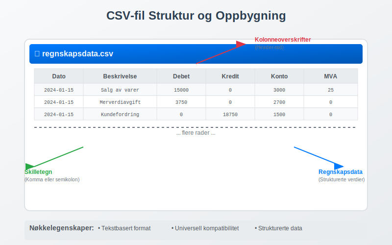
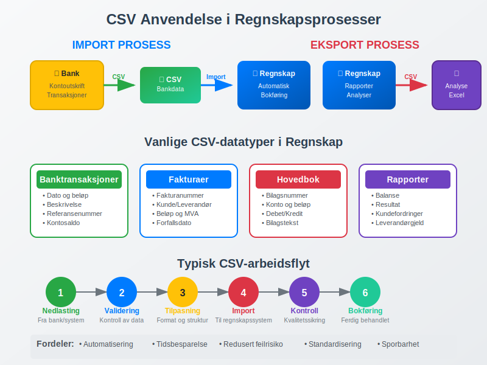
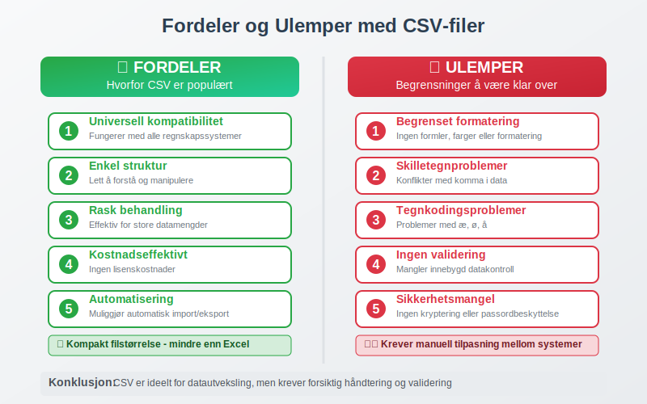
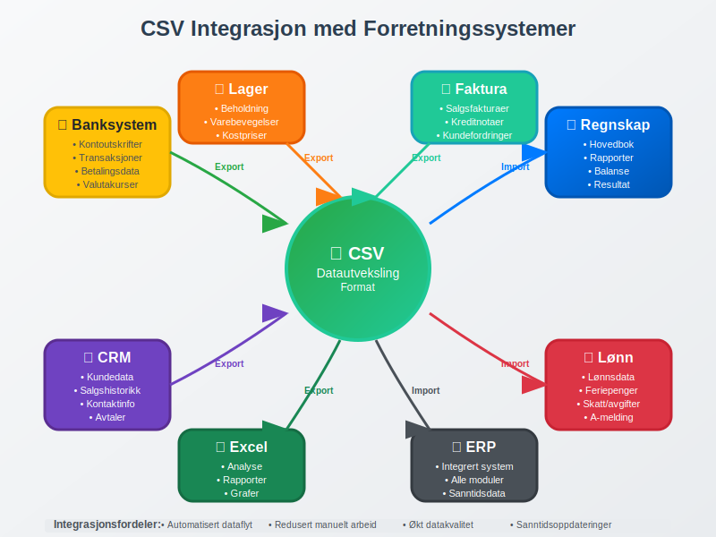

En CSV-fil (Comma-Separated Values) er et enkelt tekstfilformat som brukes til å lagre og utveksle strukturerte data mellom ulike systemer. I regnskapssammenheng er CSV-filer et kritisk verktøy for datautveksling mellom regnskapssystemer, banker og andre finansielle tjenester. CSV-formatet gjør det mulig å importere og eksportere store mengder regnskapsdata på en effektiv og standardisert måte.
Seksjon 1: Hva er en CSV-fil?
CSV står for “Comma-Separated Values” og er et filformat hvor data organiseres i rader og kolonner, adskilt av komma eller andre skilletegn. Hver linje i filen representerer en datarad, mens kolonnene er adskilt med komma, semikolon eller andre definerte skilletegn.

Grunnleggende Struktur
En typisk CSV-fil for regnskapsdata kan se slik ut:
Dato,Beskrivelse,Debet,Kredit,Konto
2024-01-15,Salg av varer,15000,0,3000
2024-01-15,Merverdiavgift,3750,0,2700
2024-01-15,Kundefordring,0,18750,1500
Tekniske Egenskaper
- Tekstbasert format: Kan åpnes i alle teksteditorer og regneark
- Universell kompatibilitet: Støttes av praktisk talt alle regnskapssystemer
- Kompakt størrelse: Mindre filstørrelse enn Excel eller andre binære formater
- Strukturert data: Organisert i rader og kolonner for enkel behandling
Seksjon 2: CSV-filer i Regnskapssammenheng
I moderne regnskap er CSV-filer uunnværlige for effektiv bokføring og databehandling. De brukes primært for å automatisere manuelle prosesser og sikre nøyaktig overføring av finansielle data.

2.1 Import av Banktransaksjoner
Den vanligste bruken av CSV-filer i regnskap er import av banktransaksjoner. Norske banker tilbyr nedlasting av kontoutskrifter i CSV-format, som kan importeres direkte i regnskapssystemet.
Typiske kolonner i banktransaksjon CSV:
| Kolonne | Beskrivelse | Eksempel |
|---|---|---|
| Dato | Transaksjonsdato | 2024-01-15 |
| Beskrivelse | Transaksjonsbeskrivelse | Faktura 2024-001 |
| Beløp | Transaksjonsbeløp | -15000.00 |
| Saldo | Kontosaldo etter transaksjon | 125000.00 |
| Referanse | Bankens referansenummer | 240115001234 |
2.2 Eksport av Regnskapsrapporter
CSV-filer brukes også for å eksportere regnskapsrapporter for videre analyse eller arkivering. Dette inkluderer:
- Hovedbok: Alle bilag og transaksjoner
- Kundefordringer: Oversikt over utestående fakturaer
- Leverandørgjeld: Oversikt over ubetalte leverandørfakturaer
- Balanserapporter: Balanse og resultatregnskap
Seksjon 3: Fordeler og Ulemper med CSV-filer
Fordeler
- Universell kompatibilitet: Fungerer med alle regnskapssystemer og regnearkprogrammer
- Enkel struktur: Lett å forstå og manipulere
- Rask behandling: Effektiv for store datamengder
- Kostnadseffektivt: Ingen lisenskostnader for å bruke formatet
- Automatisering: Muliggjør automatisk import/eksport av data
Ulemper og Utfordringer
- Begrenset formatering: Ingen støtte for formler, farger eller avansert formatering
- Skilletegnproblemer: Konflikter når data inneholder komma eller andre skilletegn
- Tegnkoding: Problemer med æ, ø, å og andre spesialtegn
- Ingen validering: Mangler innebygd datakontroll
- Sikkerhet: Ingen kryptering eller passordbeskyttelse

Seksjon 4: Beste Praksis for CSV-håndtering
4.1 Datavalidering og Kontroll
Før import av CSV-data i regnskapssystemet er det kritisk å utføre grundig validering:
- Kontroller datoformater: Sikre konsistent datoformat (DD.MM.YYYY eller YYYY-MM-DD)
- Valider beløp: Kontroller at beløp er korrekt formatert med riktig desimalseparator
- Sjekk kontonummer: Verifiser at alle kontonummer eksisterer i kontoplanen
- Kontroller balanse: Sikre at debet = kredit for alle transaksjoner
4.2 Sikkerhetshensyn
CSV-filer inneholder ofte sensitive regnskapsdata og må håndteres med forsiktighet:
- Kryptering: Bruk krypterte mapper eller sikre overføringsmetoder
- Tilgangskontroll: Begrens hvem som kan lese og redigere CSV-filer
- Arkivering: Sikker lagring i henhold til bokføringsloven
- Sletting: Sikker sletting av midlertidige filer etter import
4.3 Tekniske Anbefalinger
For optimal bruk av CSV-filer i regnskapssammenheng:
- Bruk UTF-8 tegnkoding for å støtte norske tegn (æ, ø, å)
- Konsistent skilletegn - bruk semikolon (;) for norske systemer
- Inkluder header-rad med kolonnenavn for klarhet
- Unngå tomme celler - bruk 0 eller “N/A” hvor relevant
- Dokumenter format - opprett dokumentasjon for CSV-strukturen
Seksjon 5: CSV-import i Populære Regnskapssystemer
5.1 Forberedelse av Data
Før import må CSV-filen tilpasses det spesifikke regnskapssystemets krav:
- Kolonnestruktur: Tilpass kolonner til systemets importmal
- Kontoplan: Sikre at alle kontonummer matcher systemets kontoplan
- Bilagsnummer: Generer unike bilagsnummer hvis ikke inkludert
- MVA-koder: Inkluder korrekte MVA-koder for automatisk avgiftsbehandling
5.2 Kvalitetskontroll etter Import
Etter vellykket CSV-import er det viktig å utføre kvalitetskontroll:
- Kontroller saldoer: Sammenlign importerte saldoer med originale data
- Verifiser avstemming: Utfør bankavstemming for importerte banktransaksjoner
- Gjennomgå bilag: Kontroller at alle bilag er korrekt importert
- Test rapporter: Generer testrapporter for å verifisere datakvalitet
Seksjon 6: Automatisering og Integrasjon
6.1 Automatisk CSV-behandling
Moderne regnskapssystemer tilbyr automatiserte løsninger for CSV-behandling:
- Planlagte importer: Automatisk nedlasting og import av bankfiler
- API-integrasjoner: Direkte kobling mellom banker og regnskapssystem
- Regelbasert behandling: Automatisk kontering basert på forhåndsdefinerte regler
- Feilhåndtering: Automatisk varsling ved importfeil eller avvik
6.2 Integrasjon med Andre Systemer
CSV-filer fungerer som bro mellom ulike forretningssystemer:
- CRM-systemer: Export av kundedata for regnskapsføring
- Lønnssystemer: Import av lønnsdata for bokføring
- Lagersystemer: Overføring av lagerdata for kostnadskontroll
- Faktureringssystemer: Import av salgsdata og fakturaer

Seksjon 7: Feilsøking og Vanlige Problemer
7.1 Vanlige Importfeil
- Tegnkodingsproblemer: Æ, ø, å vises som rare tegn
- Datoformat: Feil datoformat forårsaker importfeil
- Desimalseparator: Konflikt mellom komma og punktum som desimalseparator
- Manglende kolonner: CSV-fil mangler påkrevde datafelter
7.2 Løsningsstrategier
- Konverter tegnkoding til UTF-8 før import
- Standardiser datoformat til ISO 8601 (YYYY-MM-DD)
- Bruk konsistent desimalseparator (komma for norske systemer)
- Valider CSV-struktur mot importmal før behandling
Seksjon 8: Fremtiden for CSV i Regnskap
Selv om CSV-formatet er over 50 år gammelt, forblir det relevant i moderne regnskapsføring. Utviklingen går mot:
- Forbedret automatisering: AI-drevet kategorisering og kontering
- Sanntidsintegrasjon: Direktekobling mellom systemer uten filoverføring
- Forbedret sikkerhet: Krypterte CSV-filer med digital signatur
- Standardisering: Bransjestandarder for regnskaps-CSV-formater
CSV-filer vil fortsette å spille en viktig rolle i regnskapsføring og bokføring, spesielt for datautveksling mellom ulike systemer og automatisering av rutineoppgaver. Forståelse av CSV-håndtering er derfor essensielt for moderne regnskapsførere og økonomipersonell.